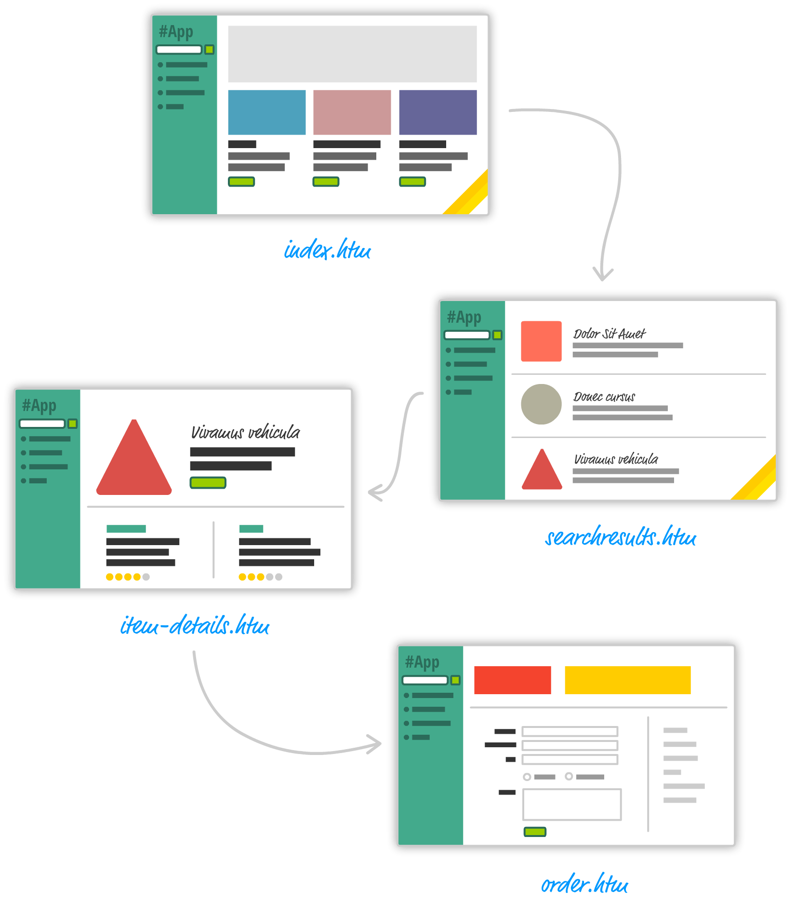
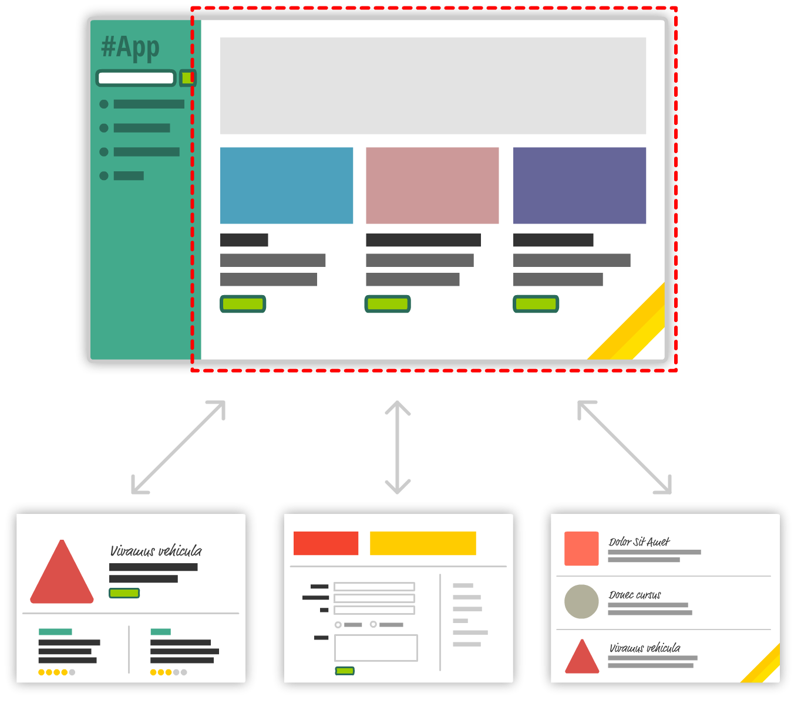
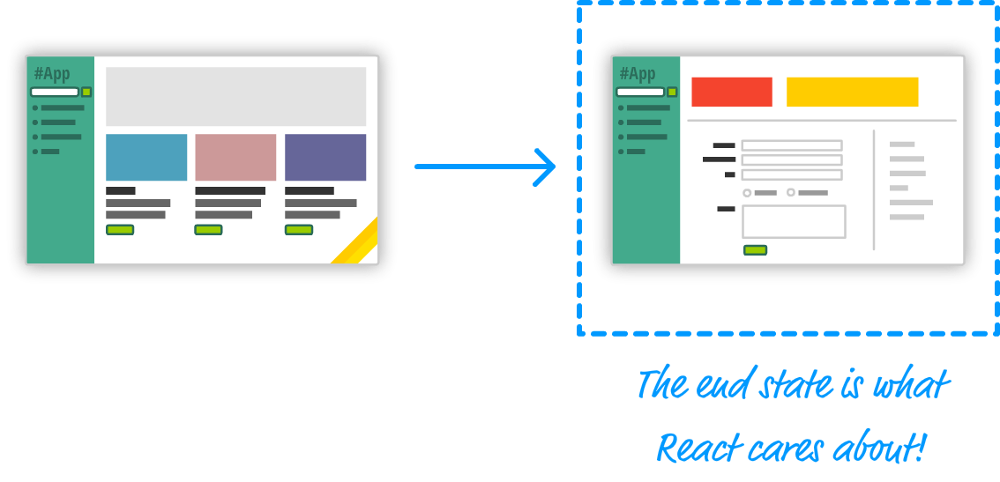
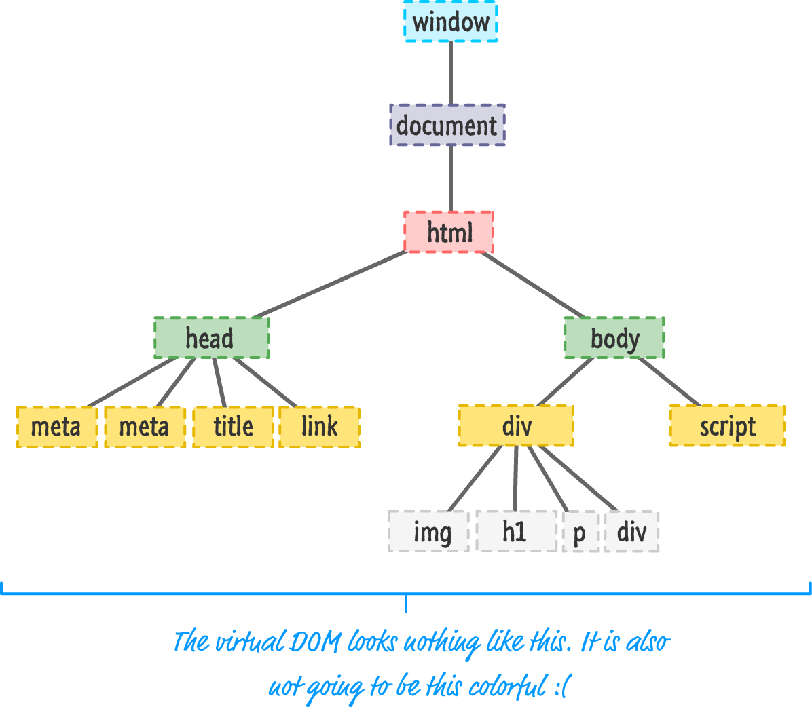
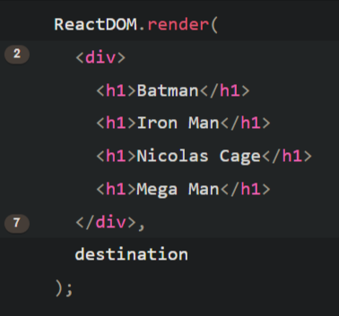
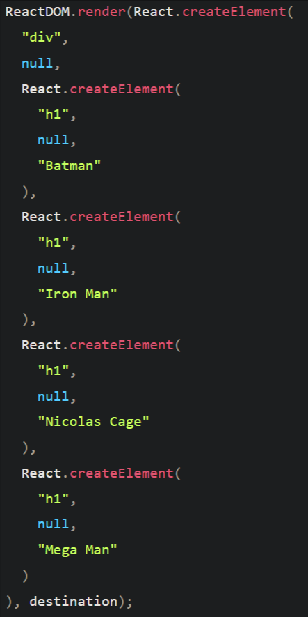
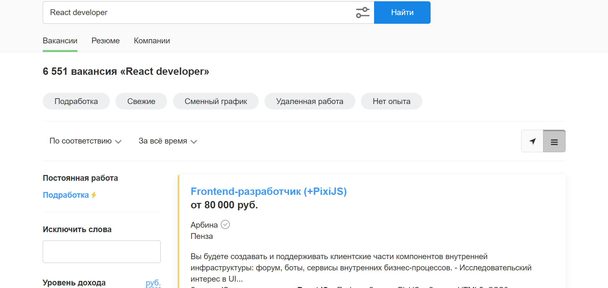
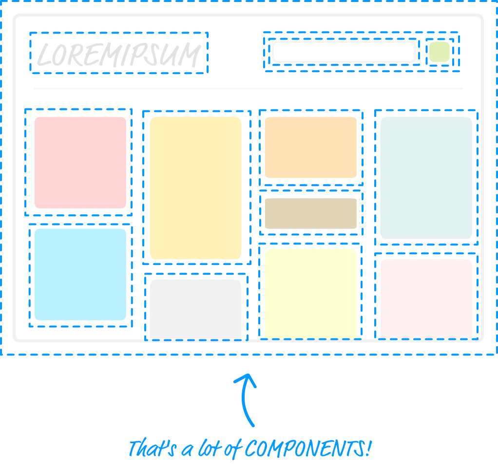
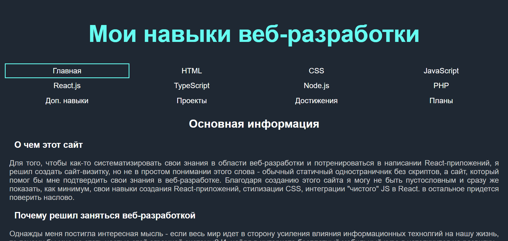

В этом разделе будут рассмотрены основные положения и основные причины
появления JavaScript-библиотеки React (также будут затронуты лучшие
друзья React - Redux и Router). По заверению компании meta (Facebook),
разработавшей этот прекрасный инструмент, изначально он создавался
для разработки пользовательского интерфейса. Что представляет из себя
React сегодня будет рассмотрено ниже.
Одностраничные динамические приложения
Все современные веб-приложения строятся по технологии многостраничности.
Она заключается в том, что при переходе в другой раздел пользователь не
попадает на новую html-страницу, а лишь изменяет содержимое уже имеющейся.
Без React такое осуществляется при помощи AJAX, и называются такие
страницы динамическими, или SPA (single page application). Одностраничные
приложения требуют особых знаний и ресурсов - их не запустить без сервера
(я, например, превое время использовал XAMPP). При их создании без
JS-библиотек могут возникать сложности, в числе которых:
Большая часть времени в SPA уходит на синхронизацию с сервером
Управление DOM происходит медленно, вызывает много затруднений
Трудности при работе с html-шаблонами

Многостраничное приложение
SPA в React
В компании Facebook в 2013 году решили создать универсальный инструмент
для работы с одностраничными веб-приложениями (в последствии, как мы
знаем, не только веб), который в последствии перевернул представление о
процессе написания SPA своими идеями. На данный момент React и его два
главных соперника - Angular и Vue (ну и Svelte вместе с ними) практически
полностью вытеснили чистый JavaScript с рынка веб-разработки.
Далее мы рассмотрим основные преимущества React.js и почему
его стоит применять в своих проектах.

Одностраничное приложение
Автоматическое управление состоянием пользовательского интерфейса
При работе с одностраничными приложениями важной задачей является
постоянное обновление состояния пользовательского интерфейса. С библиотекой
React беспокоиться придется лишь о конечном состоянии UI, а об остальном
позапотится сам React. Библиотека определяет, что должно быть сделано для
правильного отображения пользовательского интерфейса

Для React важно лишь конечное состояние
Виртуальная DOM
При использовании React.js вы будете работать с виртуальной DOM,
хранящуюся в памяти. Работа с виртуальной DOM происходит в разы быстрее,
а в случае необходимости реальная DOM обновляется. Для увеличения
быстродействия в реальную дом вносятся только критически важные
преобразования, необходимые для поддержвния актуальности DOM. Происходит
это в процессе сверки

Виртуальная DOM
API для создания компонуемых пользовательских интерфейсов
Вместо того, чтобы работать с визуальными элементами как с монолитным
фрагментом, React предлагает вас разбивать эти элементы на малые части,
именуемые компонентами. Благодаря компонентности вам будет куда проще
справляться с большими и сложными приложениями, несмотря на трудности
при работе с состояниями.
Компоненты
JSX
Одна из самых главных особенностей React - полное определение всех
визуальных элементов в JavaScript коде. Но это еще не все, что может React.
Именно благодаря JSX вы можете создавать элементы буквально как обычные теги.
Это звучит странно и непонятно, но после просмотра примера все встает на свои
места. Грубо говоря, вы пишите html-код внутри JS-кода, при этом разбавляя
его тем же самым JS-кодом.


Различие JSX кода от обычного, создающих один и тот же элемент
Сильные и слабые стороны стороны React.js
Сильные стороны
В основе React лежит простой и всем знакомый JavaScript
Используется DOM
Приложения на React достаточно мощные
React достаточно продвинут в SEO
Является open-source библиотекой
Использование JSX
Сильное сообщество
Слабые стороны
React отдает больше внимания UI, чем программированию
рекоммендуемый способ применения стилей очень неудобный
Система обработки событий в React отличается от чистого JS
Могут возникнуть трудности из-за "почерка" программистов при работе в команде
Изучение библиотеки React
Зачем изучать
Я считаю, что самым важным аргументом в изучении React будет именно
желание. Чтобы начать изучать React у вас должен появиться к нему
большой интерес, например, после прочтения этой статьи. Помимо желания
для профессиональных разработчиков важным критерием является
востребованность данной технологии на рынке труда. По состоянию на
начало марта 2022 года в России насчитывается около 10 тысяч вакансий
React-разработчика разного уровня. Что касается актуальности библиотеки,
то можно не сомневаться, что React будет популярен и востребован еще
долгое время, а сегодня ведущие мировые компании активно используют его
в своих проектах. Десять лет назад можно было сказать, что React
- будущее frontend-разработки. Сегодня React является ее настоящим,
при том будущего у него никто не отнимал.

Количество вакансий React-разработчика на hh.ru
Как изучать
Для того, чтобы изучать языки программирования не нужно обладать
особыми знаниями или даже складом ума. Я считаю, что программистом
junior-уровня может стать абсолютно каждый человек, для этого нужно
изучить требуемый список технологий, быть технически грамотным и понимать
основы computer science. Чтобы разрабатывать пользовательский интерфейс
вам не нужно знать, как работает бинарный поиск (хотя для общего
развития это будет полезным), не нужно знать как максимально
ресурсоэффективно решить задачку с последовательностью чисел Фибоначчи
или уж тем более продвинуться в решении задачи о коммивояжере.
Если же вы хотите стать крутым программистом, возможно даже full-stack
(разрабатывать и клиентскую и серверную части), то вам нужно обладать
алгоритмическим мышлением, смотреть на два шага вперед, и самое главное
- не бояться проблем и быть готовым решать одну целью ночь напролет.
Итак, для того, чтобы изучить React, вам потребуется компьютер с доступом
к интернету и, желательно, возможность покупать книги. Для себя я вывел
простой способ изучения материала - днем читаю книгу, вечером делаю
теоретические задания по той же теме. После изучения определенного блока
я смотрю какое-либо видео о нем, чтобы посмотреть на ситуацию с другой
стороны. После завершения большого раздела я смотрю оюоющающее видео,
чтобы не забыть о том, что было в начале. Вы можете посмотреть полезные
в изучении React сайты ниже.
Отличие начинающего и продвинутого разработчика
Где использовать
React - очень распространенная библиотека для разработки пользовательского
интерфейса веб-сайтов. Он используется очень часто, когда нужно сделать
красивую и функциональную страницу. Использовать React при создании
сайтов-визиток без какого-либо функционала, конечно, можно, но очень
скучно. Зато вы сможете создать из компонентов полноценную библиотеку
и при создании сайтов-визиток просто "вызывать" нужный вам компонент,
передавая ему свойства, не определяя его заново, а подключая
в индексный файл (он собирает в себе все частички проекта).
Помимо простого React существует React Native - платформа на основе
JavaScript для разработки мобильных приложений под разные
платформы - IOS и Android. В этих областях разработки есть
свои лидеры, но React Native активно с ними конкурирует,
поэтому если вдруг вы решите уйти от веб-разработки в другую сферу
- React сделает ваш переход максимально плавным, ведь React Native
отличается от React меньше, чем, например, Swift от JavaScript.

Все эти компоненты могут быть переиспользованы
В завершение статьи будет логично рассказать о моих знаниях и навыках,
касающихся React (которые, к сожалению, не были применены мной при
разработке данной страницы ввиду запрета заданием), которые я использую
практически каждый день. Итак, вот основные из них:
Управление стилями методом React
управление состояниями
События
React router
Redux

Мой первый большой проект на React - сайт-резюме
(на данный момент находится в разработке)
На данный момент я не останавливаюсь в изучении данной библиотеки,
так как сичитаю ее прекрасной, но не исключаю того, что когда-то
попробую Vue, Angular или Svelte и перейду на один из них. Одно я могу
сказать точно - пользоваться React я не перестану никогда, даже если отдам
предпочтение другой библиотеке или другому языку программирования.
Сейчас я планирую изучить TypeScript на столько, чтобы я мог писать
React-приложения с использованием TypeScript. Это повысит мой
профессиональный уровень, а также поможет мне быть более
конкурентоспособным.